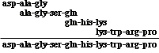

Large Molecules Problem Set
Problem 12: Sequence of a longer polypeptide
Tutorial to help answer the question
A polypeptide 10 amino acids long is split into various smaller fragments, and the amino acid sequences of some of the fragments are determined. The identified fragments include: ala-gly-ser-gln, lys-trp-arg-pro, gln-his-lys, asp-ala-gly. What is the primary sequence of the polypeptide?
Tutorial
Amino acids of a polypeptide
As with the previous question, a key piece of information is that the length of the unknown polypeptide is 10 amino acids. What are the 10 amino acids that make up the unknown? This is determined by examining the sequences of the three fragments. Note that there are 10 different amino acids present in the three fragments. They are, in alphabetical order:
ala, arg, asp, gly, gln, his, lys, pro, ser, trp
|
|
Overlapping pieces
Since no amino acids are duplicated in this example, any
amino acid found in two fragments identify an overlap. The four
fragments overlapped as follows:

The original peptide must have the sequence of:
asp-ala-gly-ser-gln-his-lys-trp-arg-pro
|
|


 

The Biology Project
Department of Biochemistry and Molecular Biophysics
The University of Arizona
Revised: October 2004
Contact the Development
Team
http://biology.arizona.edu
All contents copyright © 1996-2003.
All rights reserved.
|